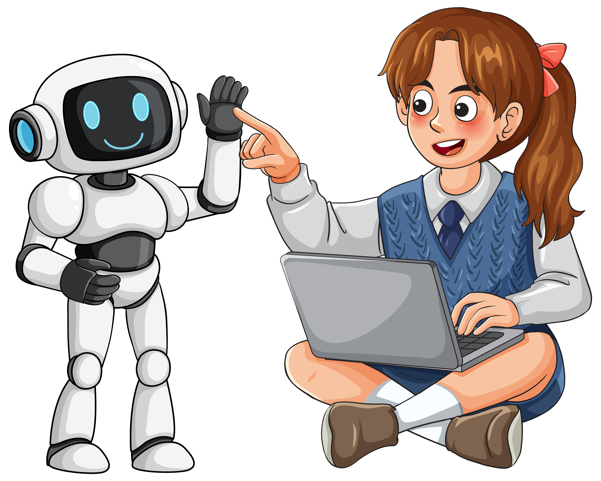
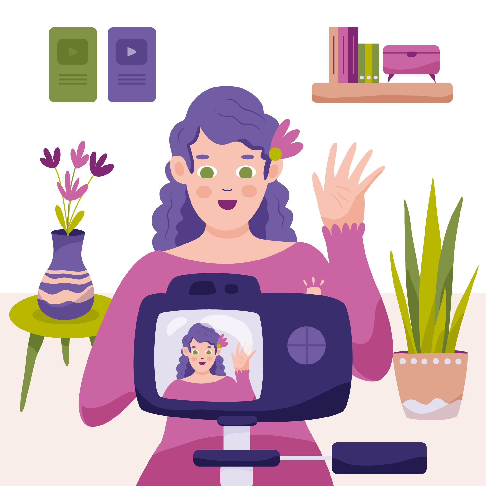

Project Overview
Transforming virtual English learning experiences.

Problem
Learner anxiety and lack of confidence when speaking in English.
Context
Synchronous virtual classes (STT).
The 5 Innovative Activities
Hover over each card to discover the strategy.

Anonymous Gamified Grammar
Objective: Practice grammar without feeling stressed.
Tools: Kahoot / Quizizz
Description:
1. Teacher creates an interactive grammar quiz.
2. Students join using smartphones and a secret nickname.
3. Students answer within a time limit.
4. Teacher explains common mistakes to the class.

My AI Conversation Buddy
Objective: Practice speaking privately to build confidence.
Tools: ChatGPT / Gemini
Description:
1. Teacher assigns a speaking topic.
2. Students open an AI voice chatbot at home.
3. Students talk to the AI for 3 minutes.
4. AI provides instant feedback.
5. Students submit a screenshot of the feedback.

Asynchronous Video Introductions
Objective: Produce spoken language at own pace.
Tools: Flip App
Description:
1. Teacher posts a prompt on a digital board.
2. Students record a 1-minute video (can delete/re-record until confident).
3. Upload the final video.
4. Watch and leave positive video comments for two classmates.

Collaborative Breakout Rooms
Objective: Teamwork to create short dialogues.
Tools: Padlet / Teams
Description:
1. Teacher divides students into breakout rooms (4-5 people).
2. Students discuss and write a short story on a digital board.
3. Teacher visits rooms to monitor.
4. Groups share their favorite part with the class.
Interactive Storytelling
Objective: Collaboratively create and narrate short stories.
Tools: Google Docs / Vocaroo
Description:
1. Students use a collaborative document to write a story.
2. Each records themselves narrating a specific part.
3. Group provides brief, positive peer feedback.
4. Optional sharing with the class.
Assessment Plan
Methods:
Continuous Formative Assessment.
Real-time feedback in gamified activities (Kahoot).
Peer-assessment and self-assessment for speaking activities
(AI Chatbot and Video Boards), prior to the teacher's final feedback.
Implementation Plan
Timeline:
16-Week progressive plan.
Weeks 1-4:
Activity 1 (Anonymous Gamified Grammar).
Weeks 5-10:
Activities 2 and 3
(AI Conversation Buddy &
Asynchronous Video Introductions).
Weeks 11-16:
Activities 4 and 5
(Interactive Storytelling with Peer Feedback &
Collaborative Breakout Rooms).
Conclusions
Integrates Gamification and AI to lower the
'Affective Filter' (Krashen).
Transforms intimidating virtual classes into safe,
dynamic, and private practice environments.
References
Edmett, A., Ichaporia, N., Crompton, H., & Crichton, R. (2023). Artificial intelligence and English language teaching: Preparing for the future. British Council.
Laura-De La Cruz, K. M., et al. (2023). Use of Gamification in English Learning in Higher Education: A Systematic Review. Journal of Technology and Science Education, 13(2), 480–497.